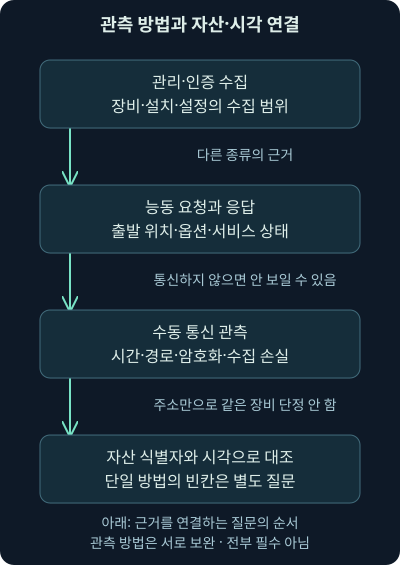
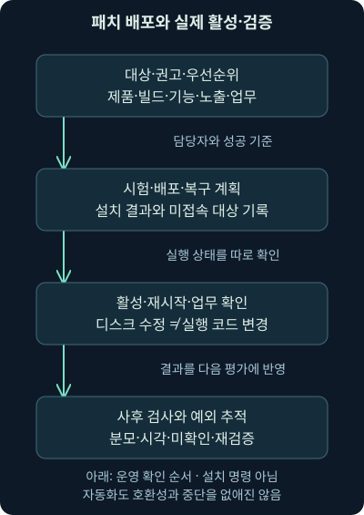
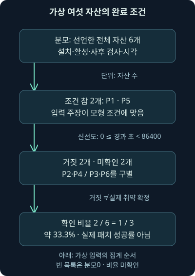

자산·취약점·패치: 알려진 대상과 검증된 조치
셋째 날 7강. 자산·관측 위치·취약 조건·수정 상태를 구별하고 자체 기록의 시간과 완료 비율을 검증합니다.
1. 공격 경로를 배웠다면 이제 줄일 대상을 찾아봅시다
앞의 여섯 강에서는 단말 접근·실행·지속성·권한·자격 증명·이동·수집·반출을 서로 다른 질문으로 나눴습니다. 이제 “어디를 먼저 고치면 그 경로를 줄일 수 있을까?”로 방향을 바꿔봅시다. 서버의 포트가 열려 있다는 보고와 패치 배포율 100%라는 화면이 동시에 있어도 두 보고가 같은 장비·제품·시각을 설명하는지부터 확인해야 합니다.
셋째 날 7강은 자산과 소프트웨어 목록, 능동·수동 관측, 취약점 평가, 조치 우선순위와 패치 검증을 다룹니다. 다음 8강은 패치만으로 해결되지 않는 악용 완화와 격리입니다. 방어 전체를 한 회차에 압축하지 않고, 뒤의 단말 방화벽·백신·실행 통제도 별도 회차로 이어갑니다.
이 강의에서 직접 실행하는 것은 자체 가상 JSON 기록의 조건·시간·비율 비교입니다. 실제 장비 스캔이나 취약점 악용, 패치 설치·재부팅을 수행한 결과가 아닙니다. 관측할 범위와 실제 조치의 근거를 먼저 익혀봅시다.
다층 방어는 서로 다른 실패 조건을 보완하는 여러 통제를 두는 방식입니다. 패치로 결함을 줄이고, 안전한 구성·실행 제한으로 동작 범위를 좁히며, 단말의 연결 통제와 기록으로 다른 경로를 살피는 식입니다. 어느 한 기능의 탐지가 실패해도 다른 근거로 알아차리거나 영향을 줄일 기회를 만드는 것이죠. 제품 개수가 많다는 사실만으로 실제 보호를 증명하지는 않습니다.
설정 강화, 악성 코드 검사, 중요한 파일의 변경 확인, 관리자 전용 작업 환경, 사용자 행동의 이상 관측, 자료 암호화와 유출 방지 등도 서로 다른 질문을 맡습니다. 한 통제가 여러 공격 경로에 도움을 줄 수 있고, 여러 통제가 같은 계정·센서·관리 서버에 의존해 함께 실패할 수도 있습니다. 예방·탐지·영향 제한·복구와 실제 가시성을 구별하고 뒤 회차에서 각각 이어봅니다.
2. 건물 관리대장과 순찰 기록을 함께 읽는 이유
건물 관리대장에는 방마다 설치한 설비가 적혀 있습니다. 그런데 현장을 돌아보니 창고에 임시 냉장고가 있고, 대장에 적힌 프린터는 이미 철거됐다고 해보죠. 대장과 현장 중 하나만 정답으로 선택하면 놓치는 것이 생깁니다. 서로 다른 방법으로 확인한 목록을 날짜·위치·담당자와 함께 맞춰야 합니다.
단말에서도 비슷합니다. 자산 목록은 관리할 장비·가상 자원 등의 식별과 역할을 담는 기록이고, 소프트웨어 인벤토리는 그 자원에 있는 운영체제·프로그램·구성 요소를 정리한 목록입니다. 인벤토리는 물건을 세어 적은 관리대장이라는 뜻으로 이해하면 됩니다.
비유와 다른 점도 있어요. 가상 서버는 짧은 시간에 생성·폐기될 수 있고, 주소는 재할당되며, 하나의 서비스가 여러 컨테이너나 중계 장치 뒤에 있을 수 있습니다. 따라서 IP 주소 하나를 영구적인 장비 이름으로 쓰지 않습니다. 자산 식별자·소유자·역할·관리 범위·마지막 관측 시각을 함께 둡니다.
3. 설치된 것과 네트워크에 보이는 것은 다릅니다
가상 서버 192.0.2.60의 관리 목록에 문서 변환 프로그램이 있다고 합시다. 이 프로그램은 요청을 받아주는 네트워크 서비스를 열지 않고 로컬 작업으로만 실행될 수도 있습니다. 반대로 관리 목록에 빠진 임시 웹 서비스는 네트워크에서 발견될 수 있죠. 두 관측은 서로 다른 질문의 답입니다.
패키지는 설치·배포를 위해 묶어 관리하는 소프트웨어 단위입니다. 설치 패키지 목록만 수집하면 압축을 풀어 실행한 프로그램, 사용자별 설치, 별도 런타임에 포함된 라이브러리 등을 놓칠 수 있습니다. 네트워크만 보면 외부에 서비스를 열지 않는 브라우저·문서 열람기와 장비 내부 구성 요소를 놓칩니다. 발견 방법이 성공했는지와 발견 대상이 무엇인지도 기록해야 합니다.
2026-11-07 확인한 CIS 소프트웨어 자산 관리 설명은 운영체제와 애플리케이션의 목록·추적·관리를 함께 다룹니다. 목록 작성은 파일 하나를 보관하는 작업이 아니라, 실제 관리 대상과 승인 상태를 계속 맞추는 과정으로 읽어주세요.

그림의 세 관측을 합친 마지막 상자를 보세요. 많은 줄을 수집했더라도 같은 장비를 중복 계산하거나 관측 날짜가 오래됐다면 정확한 범위가 되지 않습니다. 기록 수와 자산 수를 나눠야 하는 이유입니다.
4. 능동 관측과 수동 관측의 빈칸은 서로 다릅니다
능동 스캔은 조사자가 대상에 요청이나 탐색 패킷을 보내고 응답을 살피는 방식입니다. 수동 관측은 자신이 볼 수 있는 기존 통신을 수집해 해석하는 방식입니다. 누가 먼저 문을 두드렸는지로 구별하면 감이 잡힙니다. 수동이라고 해서 항상 완전하거나 영향이 전혀 없는 것도 아닙니다. 수집 장치·위치·저장 범위가 필요하죠.
능동 요청은 조용한 서비스도 발견할 기회를 줍니다. 하지만 방화벽·접속 경로·시간 제한·장비 특성 때문에 결과가 달라집니다. 운영 대상과 허용 범위·시간·요청 종류·중단 조건을 정해야 합니다. 특히 산업·의료·취약한 구형 장비는 같은 요청에도 영향이 다를 수 있으므로 임의로 스캔 범위를 넓히지 않습니다.
수동 자료에 프로그램이 안 보인다는 것은 수집한 시간과 위치에 식별 가능한 통신이 없었다는 뜻일 수 있습니다. 미사용 시간, 암호화, 다른 경로, 수집 손실도 고려해야 해요. 암호화된 연결의 목적지와 포트가 보인다는 사실과 내부 제품·설치 버전을 안다는 사실은 다릅니다.
| 관측 방법 | 답할 수 있는 질문의 예 | 남는 질문 |
|---|---|---|
| 관리·인증 수집 | 수집 권한으로 어떤 패키지·설정이 보였나? | 사용자별·휴대형·중첩 구성 요소도 포함됐나? |
| 능동 네트워크 관측 | 이 출발 위치에서 이 요청에 응답했나? | 다른 위치·프로토콜·시각에서도 같은가? |
| 수동 통신 관측 | 이 수집 범위에 어떤 대화가 있었나? | 통신하지 않은 설치 프로그램은 무엇인가? |
표의 오른쪽은 도구의 실패 목록이 아닙니다. 각 관측이 원래 답하지 않은 질문입니다. 서로 보완하고, 조사 보고에는 관측 방법과 한계를 남깁니다.
5. 열린 포트와 제품 이름을 바로 취약점으로 연결하지 않습니다
2026-11-07 Nmap의 포트 상태 설명을 확인했습니다. open은 해당 탐색에서 연결이나 자료를 받아주는 서비스가 관측됐다는 상태이고, closed는 접근은 가능하지만 해당 포트에서 듣는 애플리케이션이 없다는 상태입니다. filtered는 필터링 때문에 열림 여부를 판별하지 못한 경우입니다. open|filtered처럼 둘을 구별하지 못하는 표기도 있습니다.
이는 포트에 붙은 영구적인 명찰이 아닙니다. 내부 관리망에서 열려 보이고 외부에서는 필터링될 수 있습니다. 따라서 결과를 “대상·출발 위치·시각·전송 방식·옵션·상태”의 묶음으로 적습니다. 닫힘과 미확인도 같은 값으로 합치지 않습니다.
배너는 서비스가 응답에 내보내는 식별 문자열입니다. 제품 이름·버전의 단서가 되지만, 중계 장치가 응답했거나 표지가 수정됐을 수도 있습니다. 2026-11-07 Nmap 버전 탐지 설명도 포트 번호를 서비스 정체로 확정하지 않고 별도 요청과 응답을 이용한다고 설명합니다. 포트 이름 추정과 실제 프로토콜 해석을 구별하세요.
운영체제도 패킷의 응답 특징을 비교해 추정할 수 있습니다. Nmap 운영체제 탐지 문서를 같은 날 대조했습니다. 근접한 지문 후보와 신뢰 수준이 나올 수 있으며, 일부 조건에서 더 유리한 탐지가 됩니다. 원격 추정과 장비에서 확인한 운영체제 빌드는 서로 다른 근거입니다.
6. 명령을 읽을 때도 무엇을 보내는지 먼저 봅시다
다음은 승인된 격리 실습 환경을 가정한 문법 예시이며 이번 작성에서는 실행하지 않았습니다. 문서용 주소도 실제 연결을 시도하라는 지시가 아닙니다.
nmap -sV -p 443 192.0.2.60nmap은 도구 이름, -sV는 서비스와 버전 식별을 위한 요청을 추가하는 옵션, -p 443은 확인할 포트를 443으로 제한하는 조건입니다. 마지막 주소가 대상입니다. 443을 적었다고 HTTPS나 무해한 서버로 확정되는 것은 아닙니다. 요청의 종류·사용자 권한·도구 빌드·네트워크 경로에 따라 실제 동작과 결과는 달라집니다.
여기에 -O를 붙이면 운영체제 탐지라는 다른 질문이 추가됩니다. 스크립트까지 붙이면 단순 포트 관측을 넘어설 수 있습니다. 2026-11-07 Nmap NSE 설명에서 기본 범주에도 영향이 있는 스크립트가 있음을 확인했습니다. 옵션이 많다고 자동으로 더 적절한 조사가 되는 것은 아닙니다. 실제 설치 버전은 이번에 조회하지 않았습니다.
패킷 분석에서는 탐색 요청과 응답, 재시도·오류를 볼 수 있어도 모든 포트의 미응답 원인을 알지는 못합니다. 인증 수집 결과·단말의 실제 리스닝 상태·방화벽·요청을 여러 서버에 나누는 로드밸런서의 기록과 대조하면 같은 주소가 다른 대상을 가리킨 경우도 분리할 수 있습니다.
7. 취약점 평가는 제품·조건·수정 상태를 연결합니다
취약점은 보안 속성이 깨질 수 있는 약점입니다. 취약점 평가는 발견한 제품과 구성에 알려진 약점의 조건이 해당하는지 검토하는 과정입니다. 프로그램 이름을 발견한 것과 취약 조건을 확인한 것, 악용을 관측한 것은 각각 다른 단계입니다.
인증 없이 서비스와 대화하는 평가는 외부에서 보이는 노출을 확인하기 좋습니다. 인증해 장비의 패키지·설정 등을 읽는 평가는 다른 종류의 근거를 줍니다. 그렇다고 로그인에 성공하면 설치 목록과 취약 여부를 모두 확실히 안다고 말할 수는 없습니다. 권한 부족, 평가 규칙을 구현한 추가 기능인 플러그인의 실패, 오래된 평가 규칙, 수집되지 않은 구성 요소가 남을 수 있습니다.
작은 가상 예제로 제품 ExampleReader가 목록에 있다고 합시다. 특정 형식 처리 기능이 활성일 때만 영향을 받는 권고라면 제품 존재만으로 조건이 완성되지 않습니다. 공급사·제품군·빌드·플랫폼·기능·설치와 실행 상태를 권고에 맞춰야 합니다. 이 이름은 실제 취약 제품을 지칭하지 않는 자체 예시입니다.
8. 오래된 버전 문자열에도 수정이 들어갈 수 있습니다
백포트는 새로운 계열에서 수정한 보안 문제를 기존 제품 계열에도 반영하는 방식입니다. 2026-11-07 Red Hat의 보안 수정 백포트 설명을 확인했습니다. 배너의 기본 버전이 낮다는 이유만으로 수정 전 상태라고 단정하면 잘못 분류할 수 있습니다.
실제로는 배포판·패키지 릴리스·공급사 보안 권고와 해당 제품의 적용 상태를 대조합니다. 반대도 마찬가지예요. 상위 숫자의 버전을 보았다고 모든 취약점이 해결됐다고 일반화하지 않습니다. 기능이 별도 구성 요소에 포함돼 있거나 아직 구형 프로세스가 메모리에 남았을 수 있습니다.
보안 권고에서 “이 문제를 처음 수정한 버전”을 찾는 것과 현재 지원되는 적절한 배포 대상을 정하는 것도 다릅니다. 수정 버전을 영구적인 최신 버전으로 외우지 마세요. 공급사의 현재 지원 상태와 조직의 검증된 배포 계획을 함께 확인합니다.
9. 계속 평가한다는 것은 매 순간 모든 것을 안다는 뜻이 아닙니다
새 약점이 공개되거나 자산·기능·노출 경로가 바뀌면 어제의 결과를 다시 해석해야 합니다. 지속적 취약점 관리는 발견·평가·조치·검증을 반복하는 운영 과정이지, 모든 장비를 쉬지 않고 공격하거나 실시간으로 완벽히 안다는 뜻이 아닙니다.
2026-11-07 CIS의 현재 설명은 v8.1 자료에서 취약점 관리를 Control 7로 안내합니다. 과거 v7 계열의 Control 3 번호를 현재 체계에 그대로 붙이지 않습니다. 소프트웨어 자산 관리의 Control 2와도 목적을 구별합니다. 번호보다 어떤 범위·관측·조치를 관리하는지 이해하는 것이 먼저입니다.
평가 주기만 적지 말고 마지막 성공 시각, 실패한 자산, 인증 실패 비율, 평가 규칙 갱신, 새 자산 반영 지연도 봅니다. 목록에 “문제 없음”이 많아도 미평가 장비가 분모에서 빠졌다면 전체 환경의 상태를 설명하지 못합니다.
10. 우선순위는 심각도 숫자 하나로 끝내지 않습니다
예를 들어 가상 자산 A는 외부 요청을 직접 받는 서비스이고, B는 제한된 내부 작업용이라고 합시다. 알려진 악용 정보, 실제 노출과 기능, 데이터·업무 중요도, 접근 조건과 보완 통제, 조치 지연을 함께 살펴야 합니다. 같은 심각도라도 대응 순서와 필요한 임시 조치가 달라집니다.
여기서 심각도는 약점 자체의 영향을 평가한 정보이고, 조직의 위험은 실제 자산·노출·업무 맥락까지 포함한 판단입니다. “높은 점수=이미 침해됨”도 “낮은 점수=나중에 해도 됨”도 아닙니다. 실제 악용이 의심되면 패치 업무와 별도로 사건 조사·증거 보존이 필요합니다.
이번에는 실제 취약점 목록이나 특정 제품의 수정 버전을 내려받아 평가하지 않았습니다. 어떤 출처를 실제 확인했는지도 조사 기록에 남기는 습관이 중요합니다.
11. 패치는 배포 버튼을 누르는 순간 끝나지 않습니다
패치는 결함이나 기능 등을 수정하는 업데이트입니다. 2026-11-07 NIST SP800-40r4의 개요를 확인했습니다. 2022년 문서이며 패치 관리에 식별·우선순위·획득·설치뿐 아니라 설치 검증까지 포함합니다. 여기서는 그 개요의 운영 원리를 참고하며 문서 전체나 우리 장비의 패치 상태를 확인했다고 주장하지 않습니다.
배포 전에 영향 제품·소유자·의존성을 정하고, 신뢰할 수 있는 배포 경로와 시험 대상을 선택합니다. 성공 기준, 서비스 점검, 복구 계획과 담당자가 필요하죠. 업무 중단이 예상되면 긴급 조치 기준과 유지보수 창을 사전에 정해야 합니다. 정기 배포만 기다리기 어려운 상황도 있습니다.
설치 성공 메시지 이후에도 재부팅·서비스 재시작·새 프로세스 활성화가 필요한지 확인합니다. 디스크의 파일이 바뀌었어도 실행 중인 코드가 예전 것일 수 있습니다. 설치 후 버전·공급사 조건·기능·업무 정상 동작을 재확인하고 실패·예외·미접속 자산도 남깁니다. 자동화는 이 과정을 빠르고 일관되게 할 수 있지만 모든 중단과 호환성 문제를 없애주지는 않습니다.

그림에서 설치 다음의 상자를 빼지 마세요. 미접속 노트북, 재부팅을 미룬 서버, 제거한 줄 알았던 중첩 구성 요소는 모두 따로 확인할 대상입니다. 임시 차단·기능 제한도 담당자·만료 시각·남는 위험과 재검증 계획을 붙입니다.
12. 완료율을 계산하기 전에 분모를 고릅니다
관리에 포함된 자산이 여섯 대이고, 완료 검증 조건을 모두 만족한다고 확인한 기록이 두 대뿐이라고 합시다. 전체를 분모로 한 확인 비율은 2 / 6 = 1 / 3, 약 33.3%입니다. 확인하기 쉬운 두 대만 분모에 넣어 2 / 2라고 보고하면 질문 자체가 바뀝니다.
그렇다고 나머지 네 대가 모두 실제 취약하다고 확정할 수도 없습니다. 설치 실패와 검사 누락, 오래된 결과와 아직 읽지 못한 상태를 나눠야 합니다. “검증된 완료”와 “완료 조건 미충족”, “미확인”을 함께 보고하면 다음 담당 업무가 드러납니다.

13. 자체 실습: 설치·활성·검사와 시각을 함께 비교합니다
비교 프로그램, 가상 입력, 실습 안내를 같은 폴더에 저장합니다. JSON은 이름과 값을 묶어 자료를 표현하는 형식입니다. true는 참이라는 주장, false는 거짓이라는 주장, null은 미확인 값을 뜻합니다. 이는 실제 단말이 보낸 원본 로그가 아닙니다.
python compare_patch.py cases.jsonpython은 실행기, compare_patch.py는 자체 비교 프로그램, cases.json은 읽을 가상 입력입니다. 프로그램은 이 파일만 읽어 결과를 출력하며 장비에 접속하거나 패치를 설치하지 않습니다. 실제 실행 환경은 Python 3.12.14이며 설치·활성·검사 세 주장과 시각 조건을 비교한 실행입니다.
install_succeeded_claim은 설치 성공 주장, activation_verified_claim은 수정 코드의 활성 확인 주장, post_check_passed_claim은 사후 검사 통과 주장입니다. 세 값이 모두 참이어야 하고 observed_at이라는 관측 시각도 신선해야 이 모형의 completion_gate가 참입니다. AND는 조건을 모두 만족해야 한다는 뜻이며, 하나라도 거짓이면 거짓, 거짓이 없고 미확인이 있으면 미확인으로 남깁니다.
입력의 schema는 이 자체 자료 형식을 구별하는 표지입니다. external_actions가 거짓인 가상 입력 계약만 받아들이며, 출력에도 외부 동작 수 0과 실제 설치·장비 검증을 수행하지 않았다는 값을 냅니다. 각 자산의 id는 중복되지 않는 사례 식별자입니다. 이 연습은 버전 문자열의 대소 비교나 공급사 권고의 실제 적용 여부를 자동 판정하지 않습니다.
14. 하루의 경계와 미래 시각도 검사합니다
입력의 as_of는 비교 기준 2026-11-07T01:00:00Z입니다. Z는 협정 세계시 UTC를 뜻합니다. max_age_seconds는 허용할 최대 경과 시간으로, 자체 연습에서 86,400초를 썼습니다. 하루는 24 × 60 × 60 = 86,400초입니다. 운영의 보편적인 갱신 권고가 아니라 예제의 선택입니다.
시각을 읽었으면 기준 시각 - 관측 시각으로 경과 초를 구합니다. 이 프로그램의 신선도 조건은 0 ≤ 경과 초 < 86,400입니다. 86,399초는 범위 안, 정확히 86,400초는 밖입니다. 미래 시각과 빠진 시각은 신선하다고 채우지 않고 미확인으로 둡니다. 비교 전에 UTC 등 시간대가 있는 시각을 요구하는 이유입니다.
fresh_claim이 거짓이라는 결과는 관측이 이 연습의 시간 조건을 벗어났다는 뜻입니다. 그것만으로 패치가 제거됐거나 취약점이 다시 생겼다고 결론 내리지 않습니다. 시간대를 바꿔 적어도 같은 순간이면 동일한 결과가 나와야 합니다.
| 자체 사례 | 다른 조건 | 완료 조건 결과와 해석 |
|---|---|---|
| P1 | 세 주장 참·1시간 경과 | 참. 입력 주장이 모형 조건에 맞음 |
| P2 | 활성 확인 거짓 | 거짓. 설치 성공만으로 부족 |
| P3 | 사후 검사 미확인 | 미확인. 다른 참 값으로 빈칸을 메우지 않음 |
| P4 | 정확히 24시간 경과 | 거짓. 시간 조건 밖이며 실제 취약 판정은 아님 |
| P5 | 기준 시각과 관측 시각 동일 | 참. 경과0초도 범위 안 |
| P6 | 관측 시각 미확인 | 미확인. 날짜를 추정해 넣지 않음 |
기본 입력을 실제 비교한 결과는 참 2개·거짓 2개·미확인 2개, 분모 6개와 정확한 분수 1/3이었습니다. confirmed_fraction은 이 비율의 이름입니다. 빈 자산 목록은 0/0을 계산하거나 100%로 채우지 않고 비율을 null로 둡니다.
15. 실제 조사 보고로 옮기면 어떤 문장이 될까요?
“검사 결과 취약점이 없다”보다 “이 시각·이 권한·이 평가 규칙으로 대상 여섯 중 두 자산의 완료 조건에 맞는 근거를 확보했다”가 확인 범위를 더 정확히 말해줍니다. 실제 보고에서는 공급사 권고 식별자, 자산과 제품 빌드, 조치·활성 시각, 사후 검사 방법, 업무 정상 상태를 붙입니다.
패킷에서 배너나 응답을 직접 관측했다면 그 사실을 적습니다. 취약 조건과의 연결은 별도 가설로 적고, 장비의 패키지·프로세스·구성·패치 기록으로 보강합니다. 스캔이 실패한 결과, 로그가 없는 결과를 무취약·무침해로 바꾸지 않습니다. 출발 위치·수집 시간·암호화·중계·권한·도구 설정의 한계도 함께 둡니다.
다음 강의에서는 수정 전후 여부와 또 다른 질문인 “위험한 동작을 어떤 조건에서 제한하는가?”를 배웁니다. 패치와 악용 완화는 서로 보완하지만 같은 조치가 아닙니다.
16. 복습: 관측 범위와 완료 조건을 바꿔봅시다
질문 1. 포트가 열려 있으면 취약점 악용에도 성공한 걸까요?
해설: 서비스를 관측한 사실과 특정 약점의 조건, 실제 악용 결과는 다릅니다. 제품·빌드·구성·접근 조건과 결과 근거가 더 필요합니다.
질문 2. 수동 수집 한 시간 동안 문서 열람기가 안 보이면 미설치인가요?
해설: 통신하지 않았거나 식별되지 않았을 수 있습니다. 수집 범위·암호화·관측 시간과 단말 설치 근거를 확인합니다.
질문 3. 인증 스캐너 로그인 성공이면 모든 설치 프로그램을 안다고 써도 될까요?
해설: 로그인 권한과 수집 방법의 범위가 남습니다. 사용자별·휴대형·중첩 구성 요소, 수집 오류와 규칙 갱신을 대조해야 합니다.
질문 4. 443이라는 포트 이름만으로 HTTPS 제품 버전도 알 수 있나요?
해설: 포트 용도 추정과 응답에 근거한 서비스 식별은 다릅니다. 실제 프로토콜·배너·중계 여부와 단말 기록이 필요합니다.
질문 5. 내부에서는 open, 외부에서는 filtered면 어느 것이 틀렸나요?
해설: 출발 위치와 경로가 다르면 둘 다 그 관측의 결과일 수 있습니다. 같은 대상·시각·옵션인지 비교합니다.
질문 6. 기본 버전 문자열이 낮으면 무조건 수정 전인가요?
해설: 공급사가 기존 계열에 수정을 백포트했을 수 있습니다. 배포판·패키지 릴리스와 보안 권고의 적용 정보를 확인합니다.
질문 7. 취약점 관리가 과거 Control 3이었으니 현재도 3인가요?
해설: 체계의 판본을 붙여야 합니다. 확인한 CIS v8.1의 취약점 관리는 Control 7입니다. 목적은 이어져도 번호를 섞지 않습니다.
질문 8. 배포 화면에 성공이라고 나오면 재검증을 생략해도 될까요?
해설: 재부팅·프로세스 활성·적용 대상·업무 정상 상태가 남습니다. 배포 상태와 실제 완료 증거를 구별합니다.
질문 9. 패치 도구를 자동화하면 서비스 중단이 없어지나요?
해설: 자동화만으로 호환성·재시작 요구가 사라지지 않습니다. 시험·담당자·유지보수 창·복구 계획이 필요합니다.
질문 10. 여섯 중 두 자산만 검증됐는데 두 대를 분모로 삼아도 되나요?
해설: “확인한 두 대의 성공률”이라면 다른 지표입니다. 전체 여섯의 검증 비율은 2/6이며 누락 대상을 숨기지 않아야 합니다.
질문 11. P4에서 완료 조건이 거짓이면 실제로 패치가 안 된 건가요?
해설: 이 사례는 시각이 24시간 경계를 벗어나 모형의 완료 조건을 만족하지 못했습니다. 실제 수정 상태는 다른 근거로 확인해야 합니다.
질문 12. 86,399초와 86,400초가 다른 이유는 무엇인가요?
해설: 연습 조건이 최대 시간 미만인 반개구간입니다. 후자는 경계에 도달해 제외됩니다. 단위·부등호를 적어야 계산을 재현할 수 있습니다.
질문 13. 미래 시각이면 가장 최신이므로 참으로 삼을까요?
해설: 시계·시간대·자료 오류를 먼저 검토해야 합니다. 프로그램은 음수 경과 시간을 미확인으로 남깁니다.
질문 14. 활성 확인이 거짓이고 사후 검사가 null이면 결과는 무엇인가요?
해설: AND 조건에 이미 거짓이 있으므로 완료 조건은 거짓입니다. 미확인이 거짓을 참으로 바꿔주지 않습니다.
질문 15. 자산 목록이 비었으면 완료 비율은 0%인가요?
해설: 분모가 0이어서 이 프로그램은 비율을 null로 둡니다. 관리 대상이 없는지 수집을 못 했는지 먼저 확인해야 합니다.
질문 16. 모든 조치가 완료됐다면 이전 침해도 없었다고 결론 낼까요?
해설: 현재 수정 상태와 과거 침해 여부는 별개입니다. 의심 시간대의 단말·서비스·계정·경계 기록을 조사해야 합니다.